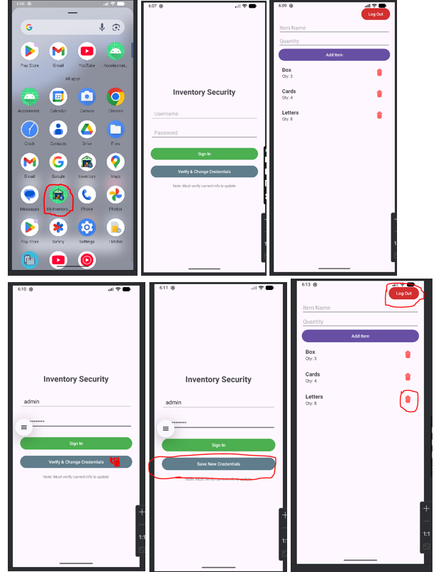
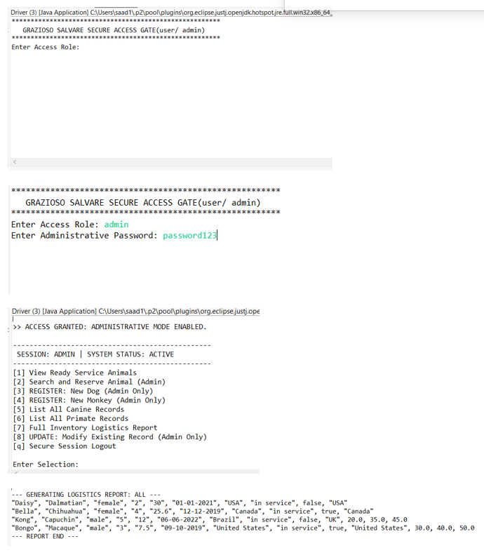
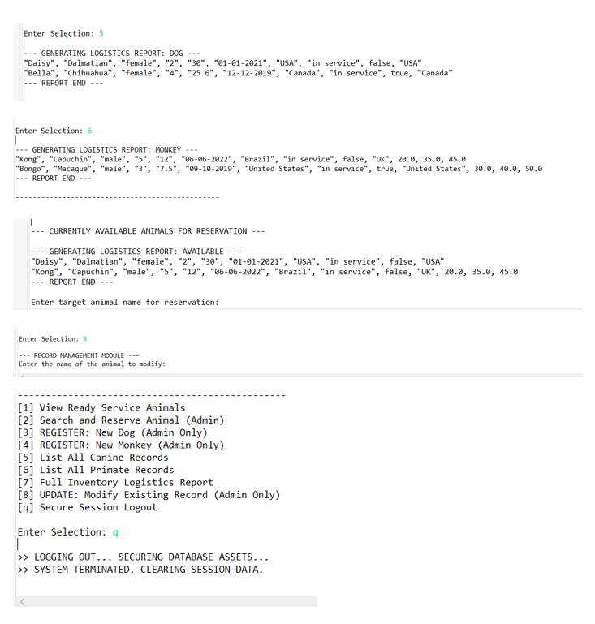
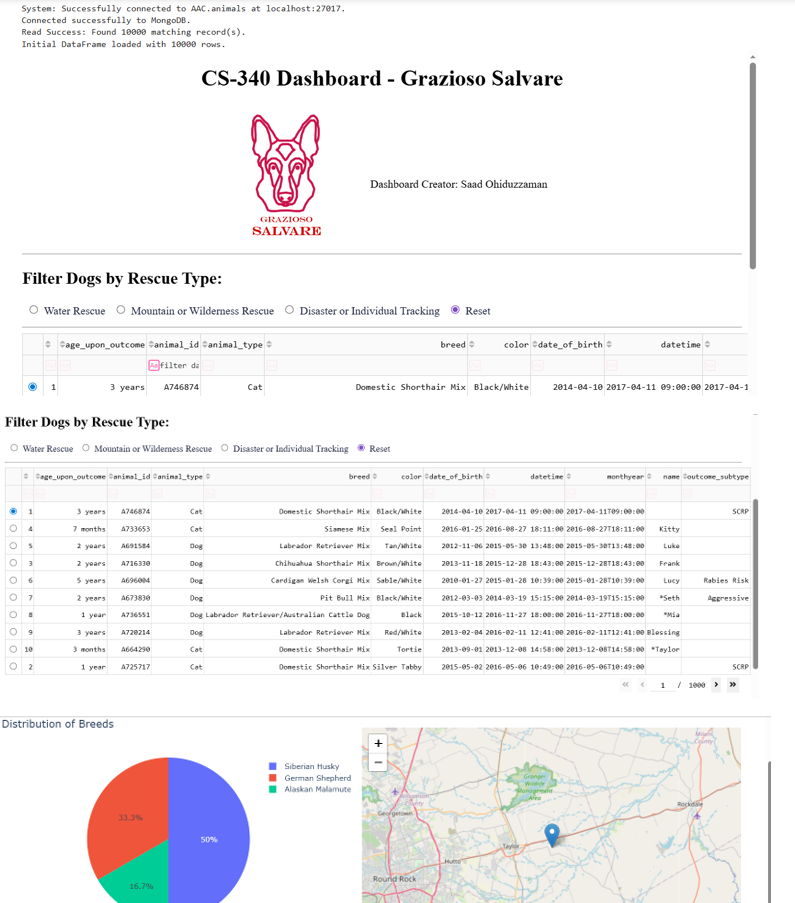

A detailed breakdown of the technical enhancements and the professional computer science standards applied to each portfolio artifact.
The Challenge: The original Android application was a basic prototype that lacked user security, crashed easily during data entry, and left database connections open, which drained device resources.
The Solution: The application was completely overhauled using modern software engineering practices. A secure login screen was built using a persistent digital vault to verify users. Active session management was implemented to shred the app’s memory upon logout. To prevent crashes, safety nets were coded to handle typing mistakes gracefully. Finally, the user interface was updated with a smart bridge adapter, allowing users to delete items instantly.

Fig 1: The enhanced secure login interface preventing unauthorized access.
The Challenge: The original Java program stored thousands of animal records in a basic list. Finding a specific animal required the computer to read every single record one by one, which is incredibly slow and inefficient.
The Solution: The underlying data structure was completely replaced. The slow lists were upgraded to HashMaps, functioning like a direct digital index. This algorithmic improvement dropped search times to near-zero, allowing the system to instantly retrieve data regardless of how large the database grows. Furthermore, custom logical algorithms were written to automatically cross check an animal's training status and availability, eliminating human error when deploying rescue teams.

Fig 2: The updated Java console demonstrating role-based access control.

Fig 2: The updated Java console demonstrating role-based access control.
The Challenge: The original Python and MongoDB dashboard was trapped inside a guided school server. It also had a massive security flaw: the database passwords were typed directly into the main code for anyone to see.
The Solution: The entire system was extracted and successfully deployed on an independent local server. The hardcoded passwords were removed and hidden inside a decoupled, secure configuration file. To protect the database from corrupt information, strict NoSQL schema validation was added. This ensures that any incoming data must meet specific rules before it is allowed to be saved.

Fig 3: The local deployment of the Dash/Plotly interactive database visualizer.
Building great software takes teamwork. Creating a clear video review of the code showed how to find errors and explain solutions to others. Writing helpful notes directly inside the code makes it easy for future developers to read, understand, and update the software. Using industry tools like GitHub keeps all files organized and tracks every change securely, which is exactly how professional teams work together today.
Being able to explain the work is just as important as writing the code. Recording a professional video presentation and writing detailed reports proved the ability to explain complex ideas simply. Difficult technical words were translated into plain English so that anyone from programmers to business managers could understand why the updates matter. Adding Before and After pictures also provided clear visual proof that the software was successfully improved.
Good software requires careful planning before typing any code. Drafting step by step plans helped figure out the best way to build the programs. For example, changing the rescue animal system to use HashMaps instead of basic lists was a smart choice that made searching the database lightning fast. Writing custom rules to automatically double check if an animal is ready for rescue work shows how to turn real world problems into safe, automated solutions.
Upgrading simple school projects into professional tools meant following strict industry rules. The software was tested over and over again to find hidden bugs. For example, typing wrong information into the Android app forced it to crash so the weak spots could be found. Once found, strong safety nets were built to fix those crashes permanently. Focusing on making software that is stable, reliable, and actually useful proves a readiness for the tech industry.
Modern software must protect user information from day one. A strict Security First approach was used for every project. Major security holes were found and completely removed, like taking secret passwords out of the main code and putting them in locked files. The Android app was also locked behind a required login screen. Finally, strict rules were added to stop bad or corrupted data from ever being saved. These steps guarantee that the software is safe, private, and ready for real world use.